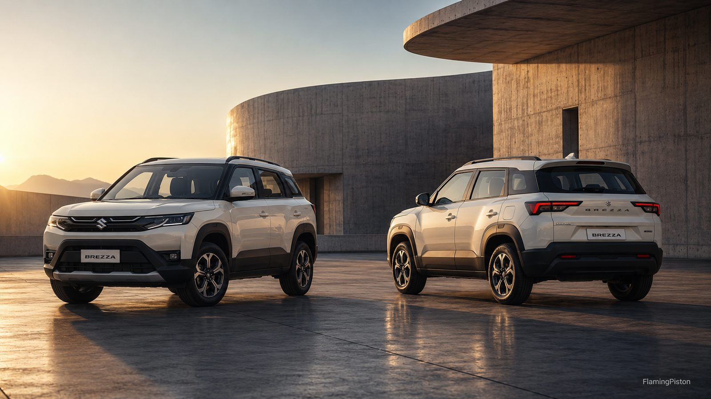

2026 Maruti Brezza Turbo vs 1.5 Petrol: Which Engine Should You Buy?

Image: FlamingPiston
The 2026 Brezza facelift added a brand-new 1.0-litre turbo-petrol engine to a line-up that already had a familiar 1.5-litre naturally aspirated petrol. On paper the choice looks obvious — the turbo makes more power, more torque, and even starts at a lower price. But there's one constraint that quietly makes this decision for a large group of buyers before any of that matters, and most quick spec comparisons skip right past it.
The One Constraint That Decides This For Many Buyers
The 1.0-litre turbo is manual-only. If you want an automatic gearbox, the turbo is simply off the table — the 6-speed torque-converter automatic is offered exclusively with the 1.5-litre naturally aspirated petrol. So if an automatic is non-negotiable for you, this comparison is already settled: you're buying the 1.5. Everything below matters most if you're happy with a manual and genuinely choosing between the two engines on merit.
Engine Specs: Turbo Leads on Paper
| 1.0L Turbo Petrol | 1.5L NA Petrol | |
|---|---|---|
| Power | 110PS | 103PS |
| Torque | 170Nm | 139Nm |
| Gearbox | 6-speed manual only | 6-speed manual or 6-speed automatic |
| Claimed mileage | 19.97–20.47 km/l | Up to 21.09 km/l (MT), 20.17 km/l (AT) |
The turbo's headline advantage isn't really the 7PS of extra peak power — it's the 31Nm of additional torque, and crucially where that torque arrives. A turbocharged engine delivers its pulling power lower in the rev range, which is what makes it feel eager in city traffic without needing to be revved hard. The 1.5, by contrast, is a larger-displacement naturally aspirated unit that builds power more gradually and predictably. For the full trim-by-trim breakdown of which engine comes in which variant, see our Brezza Variants Explained guide.
Real-World Performance: Closer Than the Numbers Suggest
Here's where honesty matters. Published first-drive impressions of the turbo consistently note that while the added torque does improve in-gear acceleration, the outright performance gain over the 1.5 is only marginal in everyday driving. The turbo feels more responsive in the mid-range and more relaxed when overtaking, but this is not a dramatically faster car — it's a more flexible one. If you were expecting the turbo to transform the Brezza into a hot hatch, it doesn't. What it does is make the same car feel a little more effortless, particularly when you're carrying passengers or climbing inclines. We have not independently road-tested either engine ourselves; the performance characterisation here reflects published expert first-drives, clearly attributed in our sources below.
Mileage: The 1.5 Edges It, But Only Just
Counter-intuitively, the smaller turbo engine is not the more efficient one on paper. The 1.5 petrol-manual claims up to 21.09 km/l, while the turbo claims 20.47 km/l on its lower variants and 19.97 km/l on the top two. That's a gap of roughly 0.6 to 1.1 km/l — small enough that it won't dominate your decision. The more important real-world nuance: turbo engines tend to lose efficiency once you actually use the boost, so an enthusiastic driver may see the gap widen in daily use, while a gentle driver may barely notice it. For what the Brezza actually returns on the road versus these ARAI claims, read our dedicated Real-World Mileage guide.
Price: The Turbo Is Actually the Value Pick
This is the part that surprises people. The turbo variants start from around ₹7.40 lakh — and for that money you get more power, more torque, and often a more generous features list than the equivalently priced 1.5 manual. In other words, the turbo isn't a pricey performance upgrade you pay extra for; on a manual-to-manual basis it's genuinely strong value. The 1.5 petrol commands its own premium specifically in automatic form, where you're paying for the convenience of the torque-converter gearbox rather than for the engine itself. So the money argument and the gearbox argument point in the same direction: manual buyers lean turbo, automatic buyers are steered to the 1.5 by default.
So Which One Should You Actually Buy?
Strip it all down and the decision is refreshingly simple. If you want or need an automatic, buy the 1.5 — it's your only option, and it's a smooth, refined, easy-to-live-with engine that suits relaxed city and mixed driving perfectly. If you're comfortable with a manual, the turbo is the smarter buy for most people: it costs less to get into, pulls more strongly in the mid-range, and comes well-equipped, with only a marginal mileage penalty. The one group who should still pick the 1.5 manual are buyers who prioritise absolute simplicity, the lowest possible running cost, and the most predictable power delivery over any extra performance. For the complete picture on the car itself, read our full 2026 Brezza review, and if you specifically want the automatic, our Brezza Automatic review covers exactly what that gearbox is like to drive.
Pick the 1.0 Turbo If
- You're happy with a manual gearbox
- You want stronger mid-range pull for overtaking and inclines
- You want the most power, torque and features for the money
- A marginal mileage penalty doesn't bother you
Pick the 1.5 Petrol If
- You want an automatic — it's the only engine that offers one
- You prefer smooth, predictable, naturally aspirated power delivery
- You want the highest claimed mileage of the two petrols
- Simplicity and lowest running cost matter more than performance
FAQs
Is the Brezza turbo more powerful than the 1.5 petrol?
Yes. The 1.0-litre turbo produces 110PS and 170Nm, against the 1.5's 103PS and 139Nm. The bigger advantage is torque, which arrives lower in the rev range, though first-drive reviews note the real-world performance gap is smaller than the numbers suggest.
Can I get the Brezza turbo with an automatic gearbox?
No. The 1.0-litre turbo is manual-only. The 6-speed torque-converter automatic is offered exclusively with the 1.5-litre naturally aspirated petrol.
Which Brezza engine has better mileage?
The 1.5 petrol-manual, marginally — up to 21.09 km/l against the turbo's 20.47 km/l (lower variants) and 19.97 km/l (top variants). The gap is small and real-world turbo economy can drop when you use the boost.
Is the Brezza turbo worth the money over the 1.5 petrol?
For a manual buyer, yes — it starts lower (from around ₹7.40 lakh) while offering more power, torque and features. The 1.5 makes more sense only if you specifically want an automatic.
Sources: Maruti Suzuki official specifications; Autocar India; CarWale; ZigWheels; V3Cars first-drive review. Performance impressions are drawn from published expert first-drives; FlamingPiston has not independently road-tested these variants.
More in the Brezza series: 2026 Maruti Brezza Review · Real-World Mileage · Variants Explained · Automatic Review · CNG Review · vs Fronx · vs Tata Nexon